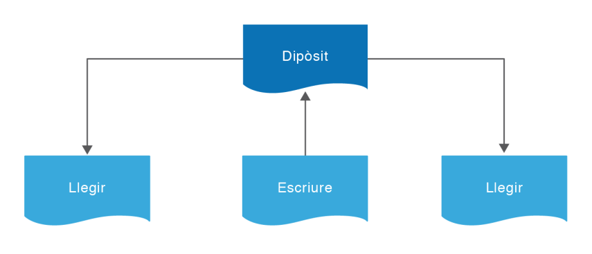
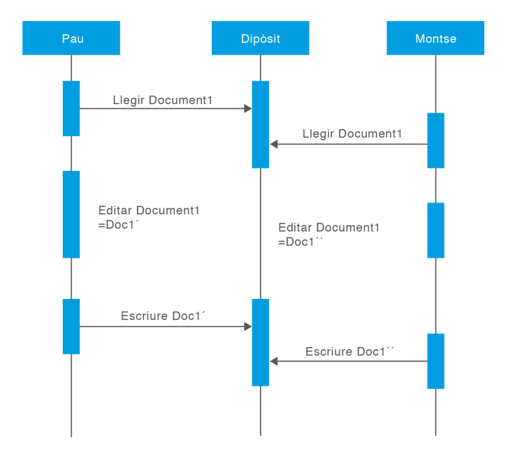
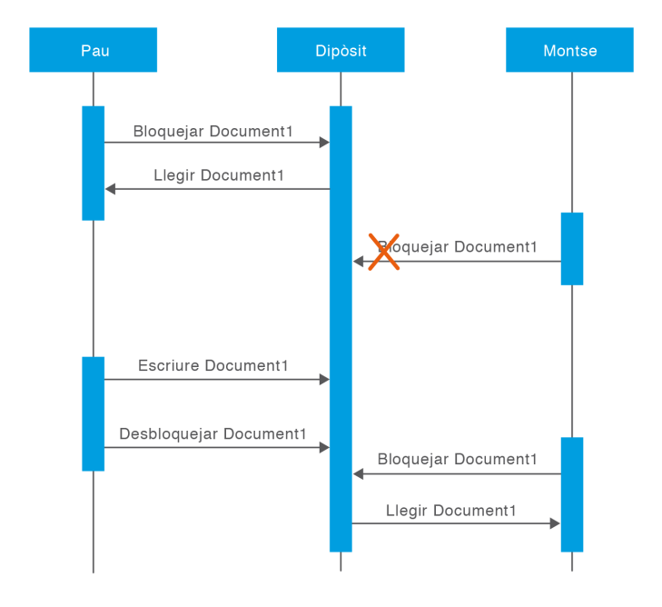
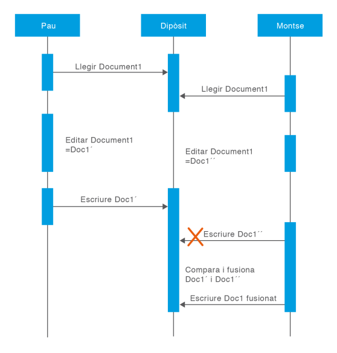

Herramientas de control de versiones
Para llevar a cabo un control de versiones automatizado existen varias herramientas que facilitan mucho este trabajo. Estas herramientas pueden ser independientes del resto del utilaje que se emplea para gestionar y desarrollar el proyecto, o pueden venir integradas dentro de otros programas, como Visual Studio o Eclipse, lo que simplifica aún más la vida a los miembros del equipo. Esa integración es una ventaja nada despreciable: si el control de versiones vive dentro del propio entorno en el que se escribe el código, el programador no tiene que saltar entre aplicaciones para guardar o recuperar sus cambios.
Las funcionalidades que ofrecen abarcan un abanico muy amplio. Van desde lo más básico, como el control del código fuente y la administración de versiones de archivos y directorios, hasta aspectos más ambiciosos como la configuración y gestión del cambio o la integración completa del proyecto, con tareas que pueden incluir el análisis, la planificación, la compilación, la ejecución y la prueba automática de la aplicación. Cuanto más integrada está la herramienta en el ciclo de trabajo, menos huecos quedan por donde se pueden perder los cambios.
Algunas de las herramientas de control de versiones más conocidas son las siguientes:
- Team Foundation Server: desarrollada por Microsoft, lo que la convierte en una herramienta privativa. Está preparada para trabajar en colaboración con Visual Studio 2010 y ofrece control del código, administración del proyecto, seguimiento de los elementos de trabajo y gestión de los archivos a partir de un portal web del proyecto. Es la evolución de una herramienta anterior, Visual Source Safe.
- CVS (Concurrent Versions System): una de las herramientas clásicas del mundo del software libre, con una serie de funcionalidades que ayudan mucho al programador: mantiene el registro de todo el trabajo de los miembros del equipo, graba todos los cambios en los ficheros y permite el trabajo colaborativo entre desarrolladores que se encuentran a gran distancia. Su modelo de trabajo, basado en la fusión de cambios, fue la base de lo que hoy entendemos por control de versiones moderno.
- Subversion: herramienta de código abierto e independiente del sistema operativo de la máquina en la que se use. Nació en el año 2000 con el objetivo declarado de sustituir a CVS, corrigiendo algunos de sus defectos y añadiendo nuevas funcionalidades. Está disponible para varios sistemas operativos, como distintas distribuciones de RedHat o macOS.
- Mylyn: herramienta que funciona como extensión del IDE Eclipse. Permite tanto la gestión del proyecto como la gestión de las versiones, y está disponible para Linux y Mac OS X.
- Git: la herramienta de control de versiones que estudiaremos a fondo. Fue desarrollada para los programadores del núcleo de Linux, precisamente porque las alternativas de la época no cubrían sus necesidades a esa escala. Hoy es el estándar de facto de la industria.
Otras herramientas
Existen muchas otras herramientas de ayuda al control de versiones. Algunas se pueden clasificar en función del lenguaje de programación al que asisten y otras en función del sistema para el que fueron desarrolladas. A continuación se recogen algunas, clasificadas según pertenezcan a software libre o a software privativo:
- Software libre:
- GNU Arch
- RedMine
- Mercurial (ALSA, MoinMoin, Mutt, Xen)
- PHPCollab
- Git
- Mylyn
- CVS
- Subversion
- Software privativo:
- ClearCase
- Darcs
- Team Foundation Server
Depósitos de herramientas de control de versiones
Un depósito es un almacén de datos donde se guarda todo lo relacionado con una aplicación informática o con unos datos determinados de un proyecto. La palabra puede sonar muy técnica, pero la idea es simple: un lugar central donde vive la información y del que todos los interesados pueden tirar cuando la necesitan.
El uso de depósitos no es una técnica exclusiva de las herramientas de control de versiones. Las aplicaciones y los proyectos informáticos suelen emplear depósitos que contienen información muy variada. Por ejemplo, un depósito relacionado con una base de datos guardará todo lo referente a cómo está implementada esa base: qué tablas tendrá, qué campos, cómo serán esos campos, cuáles son sus características y sus valores límite. En este caso, el depósito es el sitio donde se describe y se conserva la estructura de los datos.
En el ámbito del control de versiones, disponer de un depósito supone contar con un almacén central que guarda toda la información en forma de ficheros y directorios y que permite llevar a cabo una gestión ordenada de todo ello. Es el corazón de la herramienta: sin ese almacén, no habría historial que consultar ni versiones que recuperar.
Toda herramienta de control de versiones tiene un repositorio que actúa como ese almacén central. La información que almacena es todo lo referente al proyecto informático que se está desarrollando. Los clientes se conectan a ese repositorio para leer o escribir información, de modo que acceden al trabajo de otros clientes o hacen pública su propia aportación. Es, en definitiva, un punto de encuentro que también actúa como memoria colectiva del proyecto.

Gracias a la información grabada en el repositorio se puede:
- Consultar la última versión de los archivos que se hayan almacenado.
- Acceder a la versión de un determinado día y compararla con la actual.
- Consultar quién ha modificado un determinado trozo de código y cuándo fue modificado.
Un repositorio es, por tanto, la parte principal de un sistema de control de versiones. Son sistemas diseñados para grabar, guardar y gestionar todos los cambios e informaciones sobre los datos de un proyecto a lo largo del tiempo, de manera que nada se pierda y todo quede a disposición de quien lo necesite.
Problemáticas de los sistemas de control de versiones
Un sistema de control de versiones tiene que resolver un problema de fondo que aparece en cuanto hay más de una persona trabajando sobre los mismos archivos: evitar que las acciones de un programador se sobrepongan a las de otro. Si dos personas editan a la vez el mismo fichero, ¿qué ocurre con los cambios de cada una? ¿Se pierden? ¿Se mezclan? La respuesta depende del modelo de concurrencia que aplique la herramienta. Existen tres alternativas para afrontar este escenario:
- Compartir archivos por parte de diferentes programadores (el escenario problemático que queremos evitar).
- Bloquear los archivos utilizados (modelo pesimista).
- Fusionar los archivos modificados (modelo optimista).
Vamos a recorrer cada una con calma, porque entender sus ventajas y sus límites es la clave para comprender por qué Git funciona como funciona.
Compartir archivos por parte de diferentes programadores
Antes de ver las soluciones, conviene entender bien el problema. Imaginemos que dos compañeros que trabajan en el mismo proyecto, desarrollando una aplicación informática, deciden editar el mismo fichero del repositorio a la vez. La secuencia de los hechos sería la siguiente:
- Pau y Montse están editando un mismo fichero.
- Pau graba sus cambios al repositorio.
- Como Pau y Montse han accedido a la vez, la versión sobre la cual trabaja Montse no contiene los cambios efectuados por Pau.
- Montse podrá, accidentalmente, sobrescribir esos cambios con su nueva versión del archivo, por el simple hecho de ser la última persona que lo guarda. Los cambios de Pau no estarán en la versión de Montse.
- La versión del archivo de Pau no se habrá perdido para siempre, porque el sistema recuerda cada cambio y queda en el histórico del archivo.
- El resto de programadores que accedan al repositorio verán la nueva versión de Montse, pero no los cambios de Pau, a no ser que indaguen en el histórico.
El trabajo de Pau habrá quedado obviado, y eso es exactamente lo que no puede permitirse. Para evitarlo, las herramientas de control de versiones ofrecen varias estrategias, y las dos grandes son el bloqueo de archivos y la fusión de cambios.

Bloquear los archivos utilizados
El caso anterior se puede prevenir aplicando un modelo pesimista: como el conflicto es posible, se supone de antemano que va a ocurrir y se evita por sistema. Muchos sistemas adoptan esta solución, que consiste en bloquear los archivos afectados en cuanto un usuario accede a ellos en modo modificación. La secuencia sería:
- Bloquear el archivo al que se quiere acceder.
- Modificar el archivo por parte del usuario.
- Desbloquear el archivo una vez modificado y actualizado al repositorio.

La mecánica es sencilla de entender y también de implementar, y elimina de raíz la posibilidad de sobrescritura: mientras Pau tiene el archivo bloqueado, nadie más puede tocarlo. Pero tiene algunos puntos no tan positivos. Para empezar, solo permite modificar un archivo a un único usuario a la vez. En el caso planteado, Pau podrá acceder al archivo para consultarlo y modificarlo, pero Montse no podrá hacerlo, porque Pau lo tiene bloqueado. Habrá que esperar a que Pau termine y lo desbloquee para que ella pueda entrar. Se trata de una solución muy restrictiva que, en la práctica, puede frenar el trabajo con bastante frecuencia.
Los problemas de este modelo de bloqueo merecen un análisis detallado, porque son los que empujaron a la industria hacia la fusión:
- Posible creación de inconsistencias: puede parecer que el bloqueo da más seguridad a la hora de manipular archivos, pero puede provocar justo lo contrario. Imaginemos que Pau bloquea y edita el archivo A mientras Montse, simultáneamente, bloquea y edita el archivo B. Ninguno de los dos puede trabajar en el archivo del otro, así que ninguno ve lo que hace el otro. Cuando ambos desbloqueen, puede resultar que los cambios de cada uno sean semánticamente incompatibles: A y B dejan de funcionar juntos. El bloqueo protegía cada archivo por separado, pero no era capaz de proteger la coherencia del conjunto.
- Bloqueo prolongado: mientras Pau mantiene bloqueado un archivo, el resto de desarrolladores no puede acceder a él. Si Pau olvida desbloquearlo, o simplemente se va de vacaciones con él bloqueado, el resto del equipo queda a la espera y ve su trabajo paralizado por una decisión que ni siquiera ha tomado conscientemente. En proyectos grandes, donde decenas de personas dependen unos de otros, un bloqueo olvidado puede detener el avance de todo un equipo y generar tensiones internas difíciles de gestionar.
- Accesos independientes: muchas veces, las necesidades de acceso a un mismo archivo son independientes. Pau puede necesitar editar el principio del archivo y Montse simplemente quiere cambiar el final. Sus cambios no se superponen en absoluto, así que podrían editar el fichero de forma simultánea sin ningún problema, siempre que se asuma que los cambios se combinan correctamente. Obligarles a turnarse en ese caso no aporta ninguna seguridad, solo pérdida de tiempo.
Ese último problema es el que sugiere que el bloqueo quizá no sea la solución más eficiente, y abre la puerta a un modelo distinto.
Fusionar los archivos modificados
La alternativa al bloqueo es un modelo optimista, que parte de la base contraria: se supone que los conflictos son la excepción, no la norma, y por tanto no se impide que varios programadores trabajen a la vez. En lugar de proteger el archivo por adelantado, se deja trabajar a todo el mundo y, cuando llega el momento de unir los cambios, el sistema intenta fusionarlos automáticamente. La secuencia es la siguiente:
- Cada uno de los desarrolladores que necesite editar un archivo se efectúa una copia privada.
- Cada desarrollador edita su copia privada del archivo, con total libertad.
- Finalmente, se fusionan las distintas copias privadas del archivo modificado.
Esta fusión la realiza el sistema de forma automática en la mayoría de los casos, aunque la última palabra siempre la tienen los desarrolladores, que son los responsables de dar el visto bueno si el resultado de la fusión es correcto.

Ejemplo
Pau y Montse crean copias de trabajo del mismo proyecto, obtenidas del repositorio. Los dos desarrolladores trabajan simultáneamente y efectúan cambios en el mismo fichero A, cada uno en su copia local:
- Montse es la primera en grabar sus cambios al repositorio.
- Cuando Pau intenta guardar los suyos, el repositorio le informa de que su archivo A no está actualizado.
- Pau puede solicitar al asistente que efectúe una propuesta de superposición de los cambios.
- Lo más probable es que las modificaciones de Montse y de Pau no se superpongan, por lo que, una vez que ambos conjuntos de cambios se han integrado, se graba la nueva versión del archivo en el repositorio.
Este sistema funciona de maravilla mientras los cambios de cada desarrollador no afecten al trabajo del otro. La pregunta clave es qué sucede si ambos han tocado exactamente la misma línea de código. En ese caso no hay forma automática de decidir cuál de las dos versiones es la correcta, y aparece un conflicto. Para resolverlo, el sistema actúa con cautela y deja la decisión en manos de la persona:
- Cuando Pau pide que se fusionen los últimos cambios del repositorio con su copia de trabajo, su archivo A queda marcado de alguna manera como en estado de conflicto.
- Pau será capaz de ver los dos conjuntos de cambios que chocan y, manualmente, podrá elegir uno de los dos o combinar el código para que tenga en cuenta ambos.
- Una vez resueltos los solapamientos, podrá guardar con seguridad la versión fusionada en el repositorio.
Conviene subrayar que esta situación se produce pocas veces, porque la mayoría de los cambios concurrentes no se pisan entre sí. Y, cuando ocurre, el tiempo invertido en resolver el conflicto suele ser mucho menor que el tiempo que se pierde con un sistema de bloqueos mal gestionado, donde el equipo espera turnos innecesariamente.
Hay, sin embargo, un límite importante que conviene conocer: el modelo de fusión no funciona con archivos no fusionables. El caso más claro son los archivos binarios, como las imágenes. Si Pau y Montse modifican la misma fotografía, cada uno a su manera, el sistema no puede combinar automáticamente las dos versiones: o se queda la de uno, o se queda la de otro. No hay término medio. En esos casos, la fusión automática no sirve y hay que recurrir a acuerdos manuales o al bloqueo.
En conclusión, el sistema de fusión de archivos, empleado por herramientas como CVS o Subversion, tiene como punto fuerte que permite el trabajo en paralelo de más de un desarrollador al mismo tiempo, sin esperas artificiales. Su punto débil es que no puede aplicarse a archivos no fusionables, como las imágenes gráficas. Aun así, la balanza se decanta claramente hacia la fusión: es el modelo que hace posible que equipos grandes y distribuidos trabajen de forma fluida, y es la base sobre la que Git construye su forma de trabajar.